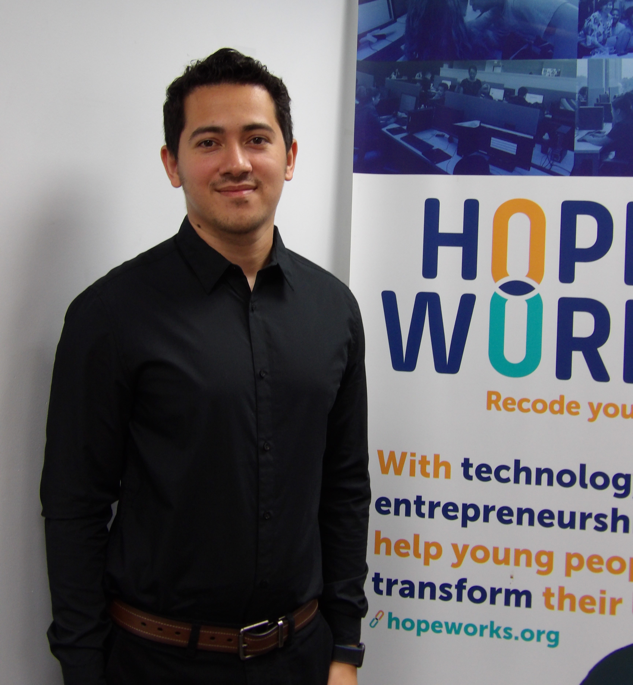

About
Edward Lopez-Ramos is a junior level full-stack developer. Driven by a love affair with tech, he takes pride in providing the most elegant solutions possible. This pride is what drives him to one day open up a software engineer consultancy firm. As a junior developer, his goals include learning as much from the experience and wisdom of his co-workers as well as delivering clean and maintainable products. Through his time at Hopeworks, Edward has grown his ability to assist others in their programming journeys. In addition to his passion for development, he also has an interest in FPV drones and basketball.